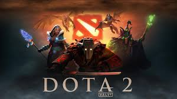

Jugar juego en linia dota 2 Juego en linia masivo en linia que se juega en todo el mundo de forma gratuita |
 |
Ver Animesgenero de dibujos basado en mangas japoneses y animados por ellos generalmente con una buena animacion |
|
Estudia en TECBA
Estudia en el tecnologico boliviano aleman cursa en segundo año de la carrera de sistemas informaticos